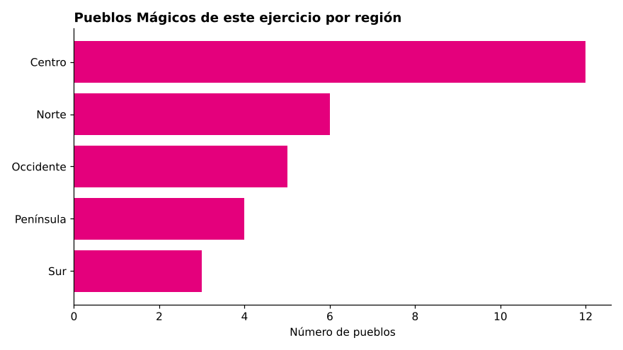

Algunos Pueblos Mágicos de norte a sur

Un Pueblo Mágico es una localidad que conserva su patrimonio histórico, cultural y natural, así como tradiciones, leyendas y paisajes que reflejan la identidad de México. El programa fue creado en 2001 por la Secretaría de Turismo para impulsar el turismo en estas localidades, y hoy agrupa a 177 pueblos en todo el país.
National Geographic, 2023
Algunos Pueblos Mágicos destacan por su entorno natural, como Bacalar, en Quintana Roo, famoso por su laguna de los siete colores, o Creel, en Chihuahua, puerta de entrada a las Barrancas del Cobre.

Otros conservan la arquitectura y las costumbres de su pasado, como Taxco, conocido por su platería, Dolores Hidalgo, cuna de la Independencia, o Izamal, la ciudad amarilla de Yucatán.
